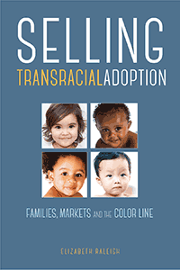

<body bgcolor="#FFFFFF" text="#000000" link="#0000FF" vlink="#CC0000" alink="#CC0000"><center><hr width="350" size="1" align="center" noshade>Examines cross-race adoptions from the perspectives of adoption providers, showing how racial hierarchies and the supply and demand for children shape the process<hr width="350" size="1" align="center" noshade><p><a href="https://cdcshoppingcart.uchicago.edu/Cart/ChicagoBook.aspx?ISBN=&&PRESS=temple" target="_top">Buy this book!</a> | <a href="https://cdcshoppingcart.uchicago.edu/Cart/Cart.aspx?PRESS=temple" target="_top">View Cart</a> | <a href="https://cdcshoppingcart.uchicago.edu/Cart/Cart.aspx?PRESS=temple" target="_top">Check Out</a></p><p></p></center><!--none//--><h1 class = "booktitle">Selling Transracial Adoption</h1> <h1 class = "subtitle">Families, Markets, and the Color Line</h1>
<h3>Elizabeth Raleigh </h3>
paper: $34.95, Dec 17<BR>EAN:&nbsp;978-1-4399-1478-6<BR><font color=#990033>Not Yet Published Preorder</FONT><font size=-7><br>&nbsp;</font></p><p class="info">cloth: $94.50, <BR>EAN:&nbsp;978-1-4399-1477-9<BR><font color=#990033>Not Yet Published Preorder</FONT><font size=-7><br>&nbsp;</font></p><p class="info"></p></td></tr></table>
<BR> <p class="info">274 pp<BR> 6 x 9<BR> <p class="info"><font size=-7>&nbsp;</font></p><p class="info">
</P><BLOCKQUOTE></BLOCKQUOTE>
<p>While focused on serving children and families, the adoption industry must also generate sufficient revenue to cover an agency's operating costs. With its fee-for-service model, Elizabeth Raleigh asks, How does private adoption operate as a marketplace? Her eye-opening book, <i>Selling Transracial Adoption, </i>provides a fine-grained analysis of the business decisions in the adoption industry and what it teaches us about notions of kinship and race. <br/><br/>Adoption providers, Raleigh declares, are often tasked with pitching the idea of transracial adoption to their mostly white clientele. But not all children are equally "desirable," and transracial adoption-a market calculation-is hardly colorblind. <i>Selling Transracial Adoption </i>explicitly focuses on adoption providers and <i> </i>employs candid interviews with adoption workers, social workers, attorneys, and counselors, as well as observations from adoption conferences and information sessions, to <i> </i>illustrate how agencies institute a racial hierarchy-especially when the supply of young and healthy infants is on the decline. Ultimately, Raleigh discovers that the racialized practices in private adoption serve as a powerful reflection of race in America.<br>
<P CLASS="top"><A HREF="#top">BACK TO TOP</A></P>&nbsp;
<BR>&nbsp;
&nbsp;<P>
</P><BR>&nbsp;
<H2 class="inpageheading"><A NAME="author bio"></a>About the Author(s)</H2><p><b>Elizabeth Raleigh</b> is Assistant Professor of Sociology at Carleton College in Northfield, Minnesota.<br>
<P CLASS="top"><A HREF="#top">BACK TO TOP</A></P>
<p><h2 class="inpageheading"><a name="subjects"></a>Subject Categories</h2> <p><a href="http://www.temple.edu/tempress/sociology.html" target="_top">Sociology</a> <br><a href="http://www.temple.edu/tempress/race.html" target="_top">Race and Ethnicity</a> <br><a href="http://www.temple.edu/tempress/family.html" target="_top">Family Policy</a> <br><a href="" target="_top"></a> <br><a href="" target="_top"></a> </p>
</p>
<P>
</P>
<p align="center"><a href="https://cdcshoppingcart.uchicago.edu/Cart/ChicagoBook.aspx?ISBN=&&PRESS=temple" target="_top">Buy this book!</a> | <a href="https://cdcshoppingcart.uchicago.edu/Cart/Cart.aspx?PRESS=temple" target="_top">View Cart</a> | <a href="https://cdcshoppingcart.uchicago.edu/Cart/Cart.aspx?PRESS=temple" target="_top">Check Out</a></p><p><font face="Arial" size="1"><a href="copyright.html" onMouseOver="window.status='Web Copyright Policy';return true;" onMouseOut="window.status=''" title="Web Copyright Policy">&copy;</a> 2018 <a href="http://www.temple.edu" target="new" onMouseOver="window.status='Link to Temple University home page';return true;" onMouseOut="window.status=''" title="Link to Temple University home page">Temple University</a>. All Rights Reserved. http://www.temple.edu/tempress/titles/2449_reg.html</font></p>